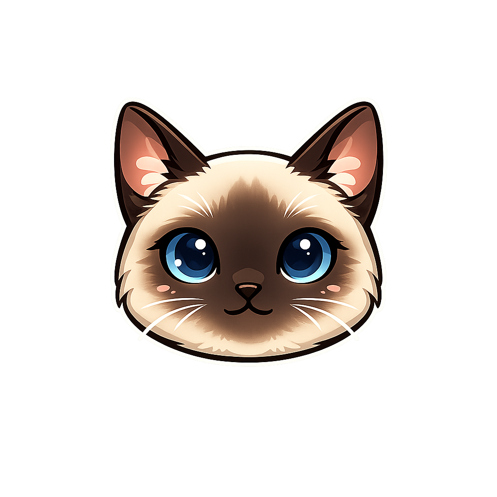

Inanna Proto-IA
Aprenda como a IA prevê palavras brincando com versos de Cordel e cultura popular brasileira.

👋 Bem-vindo ao Cordel 2.0
Identifique-se para começarmos a criar.
🎭 Escolha um Contexto
O sistema usará este tema para gerar as previsões, como um modelo de linguagem que aprende padrões de um corpus específico.
✍️ Escreva um Verso Incompleto
Tema selecionado: —
Escreva o verso sem a última palavra. A lacuna ___ ficará sempre no fim para
você testar a rima e a previsão da Inanna.
A Inanna vai completar apenas a última palavra do verso.
🤖 Previsões da Proto-IA
Escolha uma palavra sugerida para fechar o verso ou digite a sua própria. Se quiser, abra o vetor para ver como cada dimensão pesou na probabilidade.
🎯 Sugestões para a lacuna final
Clique em Ver vetor para abrir a explicação da palavra escolhida.
Letramento em IA
Veja como a Inanna transforma palavras em vetores, soma pesos e distribui probabilidades.
Sua Quadra está pronta!
Você criou 4 versos com ajuda da Proto-IA. Veja como ficou: